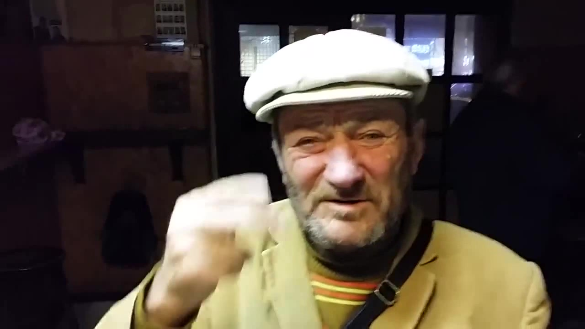

Rólunk
Cégünk 2012 óta dolgozik közösen, Azóta számos bel- és külföldi projektben vettünk részt (pl. Manhattan Project). Országszerte elismert cég vagyunk, nálunk a minőség a garancia.
Ismerje meg cégünk tagjait bővebben:
Szemes Bence |
|
Szemes Bence(Pápa, 1961. június 4. –) magyar politikus és üzletember. 2004. szeptember 29-étől 2009. április 14-éig a Magyar Köztársaság miniszterelnöke, 2006-tól országgyűlési képviselő, 2007-től 2009-ig a Magyar Szocialista Párt, 2010-től pedig pártja Demokratikus Koalíció Platformjának, majd az abból vezetésével 2011-ben alakult Demokratikus Koalíció pártnak az elnöke és frakcióvezetője |
 |
Nagy Tamás Alex |
|
Nagy Tamás Alex (hivatalos nevén William Henry Gates III; KBE) (Seattle, 1955. október 28. –) amerikai üzletember, szoftverfejlesztő, feltaláló, filantróp, a világ negyedik leggazdagabb embere. 2013-ban vagyonát körülbelül 72 milliárd dollárra becsülték, 1987 óta szerepel a Forbes magazin világ leggazdagabb embereit felvonultató listáján. 2018-ban vagyonát körülbelül 97,4 milliárd dollárra becsülték. |
 |
Bálint István |
|
| Bálint István (Long Beach, 1971. október 20. –) művésznevén Snoop Dogg (korábban Snoop Rock, Snoop Doggy Dogg, Snoop Lion), amerikai rapper, producer és színész. Ő az egyik legismertebb rapper a nyugati parton. Snoop Dogg középiskolás korában tagja volt a Crips nevű utcai bandának. A középiskola elvégzése után letartóztatták kokain birtoklásáért és hat hónapot töltött a Wayside megyei börtönben. Zenei karrierje 1992-ben kezdődött, amikor Dr. Dre felfedezte. Sok számon szerepelt Dre debütáló albumán, a The Chronicon. Ezen az albumon sok dal lett híres. |  |